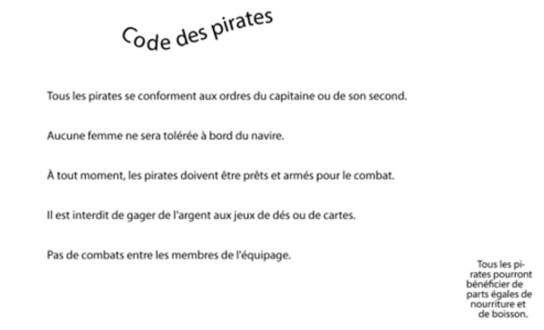

Deux exercices sont présents dans cette section: Mise en page et modification de texte.
Mise en page
Texte de départ
Titre: Code des pirates
Paragraphe:
Tous les pirates se conforment aux ordres du capitaine ou de son second.
À tout moment, les pirates doivent être prêts et armés pour le combat.
Il est interdit de gager de l'argent aux jeux de dés ou de cartes.
Pas de combats entre les membres de l'équipage.
Signature: Tous les pirates pourront bénéficier de parts égales de nourriture et de boisson.
Étapes
Créez une courbe et inscrire le titre à l'aide de l'outil curviligne.
Créez une boîte de texte de la taille d'une phrase.
Copiez ensuite le texte du paragraphe dans la boîte.
À l'aide du petit carré rouge en bas du texte, mettre les phrases dans des boîtes séparées.
Aligner et répartir les phrases de texte.
Créez un cercle.
Utilisez ensuite L'outil de texte captif pour y insérer la phrase de signature.
Aperçu du résultat:

Modification de texte
Dossier de départ
Téléchargez le document suivant et ouvrez le dans Illustrator.
Document de départ
Téléchargez la police suivante:
Orbitron
Étapes
Le but de l'exercice est de reproduire le même texte qu'en bas avec notre texte du haut.
Assurez-vous de télécharger la police Orbitron ci-haut et installez-la sur votre ordinateur.
Allez dans la barre de texte, puis sélectionnez: Vectoriser.
Assurez-vous que les repères commentés sont activés.
Utilisez les outils V et A pour modifier les lettre et reproduire la même chose qu'en bas.